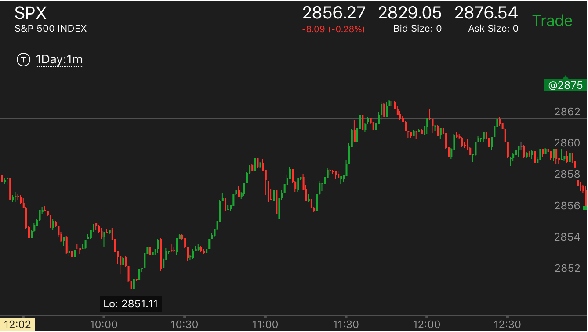

横向5浪和调整走势的区别
关键在于第一浪的形状，如果第一浪上涨速度很快，而下跌速度很慢，那么就是横向5浪，一旦结束就会大跌。反过来就是调整走势。一旦结束会继续大涨。 而后面两浪的形状并不重要。不要看到后面两浪似乎快慢有区别，就判断错误。

图示：10：50上涨后，快速下跌。说明还要继续涨。而11：20开始了比较快的上涨。然后缓慢走低。 但是第一浪已经表示这个会是继续要涨的走势了。所以不能认为要跌。